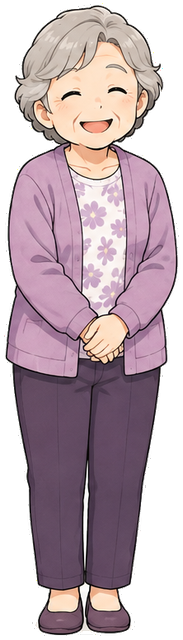
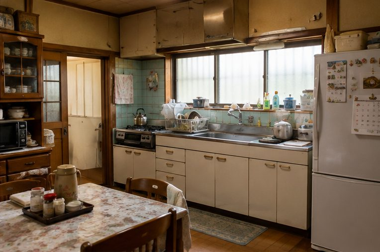
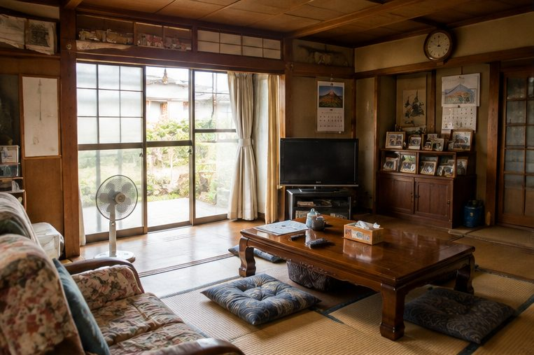
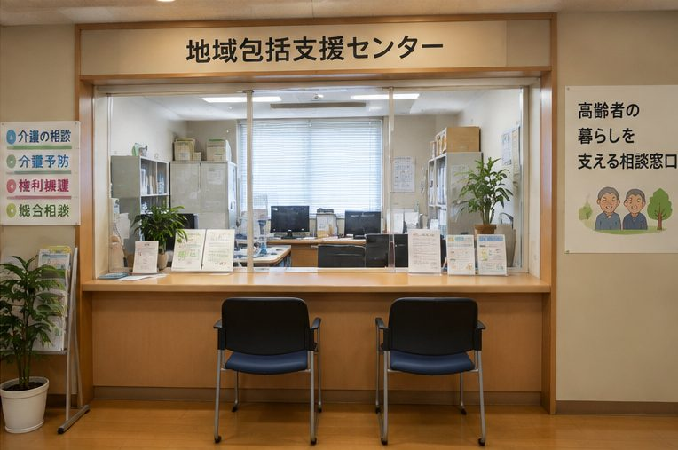
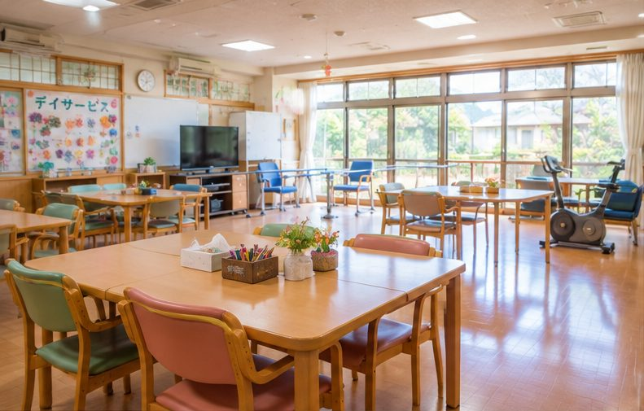
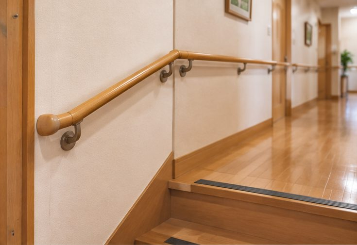
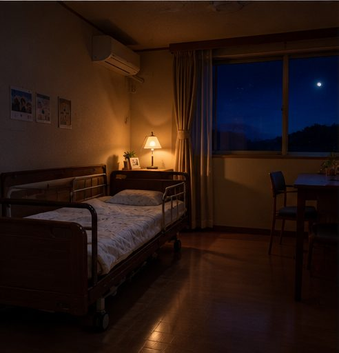
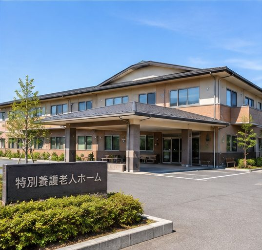
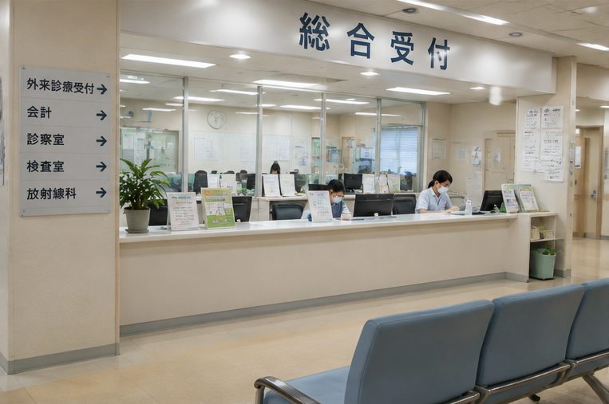
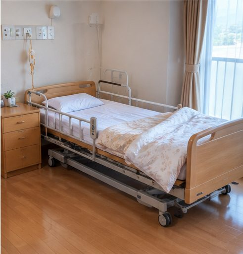

まんがでわかる介護
はじめて介護に向き合う家族の「さくらさん」と一緒に、介護保険の申請からサービス・施設の利用までの流れを見てみましょう。

母のはなこ第1話 お母さんの様子が気になる相談から要介護認定の申請まで

お母さん、最近よく転ぶし、料理もつらそう…
大丈夫よ〜、まだまだ元気！

まずは母の住む地域の「地域包括支援センター」に電話してみよう

介護保険を使うには「要介護認定」の申請が必要です。代わりに申請もできますよ
お願いします！
なんでも自分でできますよ！
（本当は夜、トイレで転んだの…）
結果が届いた！「要介護1」だって
これでサービスが使えるのね
- 最初の相談先は「地域包括支援センター」。わからなければ市区町村の介護保険の窓口へ。
- 申請・調査・意見書に費用はかかりません。
- 認定調査には家族が立ち会い、困っていることを具体的に伝えるのがコツ。
第2話 ケアマネさんと家での暮らしを考えるケアプランづくりと在宅サービス
ケアマネジャーの田中です。困っていることを教えてください
ひとりでお風呂に入るのがこわいのよ
デイサービスで入浴できますよ。送迎もあります

デイの職員はなこさん、お茶をどうぞ
みんなとおしゃべりできて楽しいわ

手すりは住宅改修で20万円まで介護保険が使えます。工事の前に申請してくださいね
知らなかった！
- 自己負担は原則1割（所得により2〜3割）。要介護1なら、月に約16万7千円分までのサービスを1割負担で使えます。
- ケアマネジャーは変更できます。合わないと感じたら遠慮なく相談を。
- 住宅改修は「工事の前」の申請が必要です。
第3話 施設を考えるときショートステイ・特養の申し込み

仕事と介護の両立…ちょっと限界かも
要介護3になったので、特養（特別養護老人ホーム）にも申し込めますよ
どこを選べばいいの？

施設の職員見学はいつでもどうぞ。お食事もご覧ください
いくつかの施設に申し込んでおこう
ここなら安心ね
- 特養は原則要介護3以上。入所の順番は申し込み順ではなく、必要度で決まります。
- 見学は必須。月の費用だけでなく、入居一時金や医療費なども含めて比べましょう。
- 費用が心配なときは「高額介護サービス費」「負担限度額認定」を市区町村に相談。
第4話 お父さんが入院から家に帰るとき退院の準備と訪問看護

退院したら、家でみられるかな…
病院の相談員退院後のことは、病院の医療相談室にご相談くださいね
入院中でも介護保険の申請ができます。退院前にみんなで打ち合わせをしましょう

訪問看護師週に1回、体調とお薬を見に来ますね
家はやっぱり落ち着くなあ
- 退院の話が出たら、すぐ医療相談室とケアマネジャー（いなければ地域包括支援センター）に連絡。
- 訪問看護は主治医の指示で利用します。
- 介護ベッド・車いすなどはレンタル（福祉用具貸与）で、要介護度により対象が変わります。
第5話 お母さん、もしかして認知症？物忘れの相談と受診
お母さん、お鍋こがしたの今週3回目だよ…
あら、そうだったかしら？
まずはかかりつけ医に相談してみましょう。治療で良くなる病気が隠れていることもあります
本人がいやがったら…？
血圧のついでに、一緒に健康診断に行こうよ
あんたも一緒なら行こうかね
早く分かったから、使えるサービスや、お金のことも今のうちに話し合えるね
- 相談先はかかりつけ医か地域包括支援センター。受診をいやがるときは専門職が訪問してくれることも（認知症初期集中支援チーム）
- 治療で良くなる病気が隠れていることがあるので、早めの受診が大切
- 判断力があるうちに、お金の管理（成年後見・任意後見など）を家族で話し合う
第6話 介護のお金、いくらかかる？自己負担と軽くする制度
サービスを増やしたいけど、お金が続くか心配…
自己負担は原則1割です。使う回数から、毎月の目安を一緒に計算しましょう
1割なんだ！
1か月の自己負担が上限をこえたら「高額介護サービス費」で戻ってきますよ
施設の食費は？
所得や預貯金が一定以下なら「負担限度額認定」で、施設の食費と部屋代が軽くなります
- 自己負担は原則1割。上限（区分支給限度額）を超えた分は全額自己負担
- 1か月の自己負担が上限を超えたら「高額介護サービス費」で戻る
- 施設の食費・部屋代は「負担限度額認定」で軽くなることがある。医療費と介護費の年間の合算制度もある
第7話 お父さんの「最期は家で」在宅での看取りと人生会議
最期は、この家で過ごしたいなあ
訪問看護師その気持ち、みんなで話し合っておきましょうね
延命の治療とか、どうしたいか聞いておかないとね
元気なうちに話しておけてよかったわ
訪問診療の先生と訪問看護で、24時間支える体制をつくりましょう
いざというときは、救急車じゃなくて、まず訪問看護に電話するんだったね
- 在宅医・訪問看護・ケアマネジャーのチームで、家での看取りを支えられる
- 受けたい医療やケアを前もって話し合う「人生会議」。気持ちは変わってもいいので、何度でも
- いざというときの連絡先と順番を、前もって確認しておく
まんがは一般的な例です。使えるサービスや手続きは、要介護度・地域・家族の状況によって変わります。くわしくは地域包括支援センターやケアマネジャーにご相談ください。